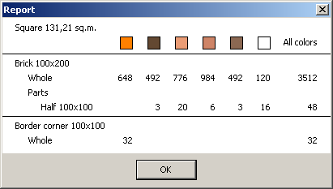
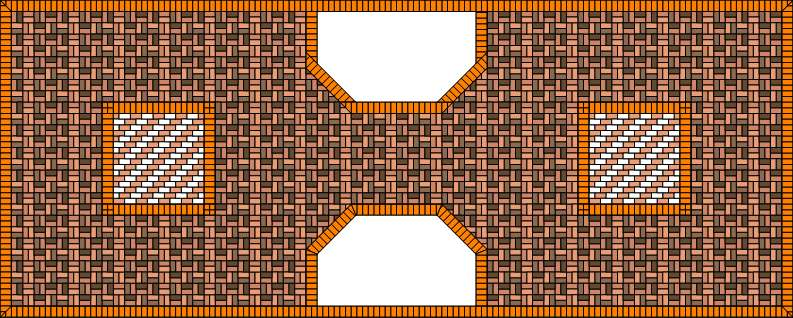
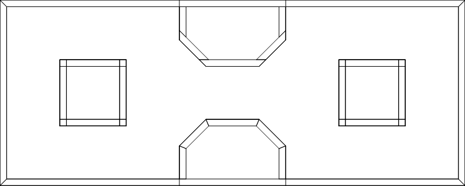
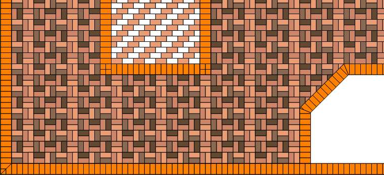

Paving Design Expert 2.2
Final processing of the working draft

Presentation export
It is impossible to draw green lawns in this version of the program. It’s possible in Paint. You need to export a working draft in an image-file. Choose it the project editor main menu Projects > Export a presentation. Next you need to specify the name of the file where you save the presentation of our working project. Saving goes so far only in BMP format.Depending on what you will do next with this picture, you need to set the scale in the project editor window before exporting. Export goes in the same scale you consider a project in the project editor. Therefore, if you want to place the picture on the website, you can set the smaller scale. And if you want to print on a plotter to A2 format, then you will need a larger scale.
Working project report
The report described in details in the reference manual. Here we’ll regard several projects in a single draft and projects clones.
Firstly, the report is based totally on all the projects that are included in the set. As you can see, the white tiles are found only in the squares, and the orange-brown - only in mounts. However in the report they are listed together with the internal space tiles. In contrast, light milky coffee color tiles are included in the inner space and squares. In the report they are listed in the total number - 796.
Secondly, clones tiles accounted as if they were not clones and "real" projects. That is, to the number of tiles in the original draft was added the number of tiles in all of its clones. You can count the number of white tiles in both squares. In the first one there are 68 and the second is his clone. Totally white tiles are 136 pcs.
One more comment on the report. The total area. It is the total area of all projects set - the interior space, squares, edging - and their clones. The report shows the area of 131.17 sq.m. Strange number as the given size of the working draft is 14 m × 5,6 m, for a total 78.4 square meters. Where is 131.17 from? This number includes the area of the "layout" which is in fact not part of the project. Therefore, before viewing the report you need to remove all unnecessary projects from the set. Delete draft "layout" and then look at the report again. Now the area is 70.37 sq.m. This is the sum of the areas of all the projects in a set - the area of a rectangle 14 × 5,6 minus the area of the two lawns.
Project printing
As described in the reference manual, you can print:


By default all set projects are printed. Setting can be disabled in the print options. Then it will print only active project of a set.